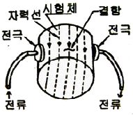
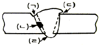
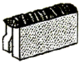

자기비파괴검사기사(구) (2011-08-21 기출문제)
1과목: 자기탐상시험원리
1. 표면의 미세한 결함을 탐지하는데 사용되는 잔류의 형태로 다음 중 가장 적합한 것은?
- 직류
- 반파직류
- 교류
- 삼상전파정류
(정답률: 알수없음)

2. 자분탐상시험을 적용할 수 없는 재질은?
- Fe
- Ni
- Co
- Cu
(정답률: 알수없음)
3. 직접 통전법으로만 나열된 것은?
- 프로드법, 전류관통법, 직각통전법
- 프로드법, 축통전법, 직각통전법
- 극간법, 축통전법, 코일법
- 극간법, 자속관통법, 전류관통법
(정답률: 알수없음)
4. 10[Oe]에서 자분모양이 나타나는 A형 표준시험편을 이용하여 자계의 강도가 20[Oe]되는 전류값을 구하려고 한다. A형 표준시험편을 놓고 서서히 전류를 증가시켜 500[A]에서 자분모양이 나타났다면 구하려는 전류값[A]는?
- 100
- 500
- 1000
- 2000
(정답률: 알수없음)
5. 교류자화에 의한 표피효과에서 표피의 두께라함은 자속밀도가 표면 값의 몇 %가 되는 깊이를 말하는가?
- 약 17%
- 약 37%
- 약 50%
- 약 63%
(정답률: 알수없음)
6. 시험체에 자극이 남아있는 경우 탈자의 확인방법이 아닌 것은?
- 자속계로 자극부의 잔류자기를 측정한다.
- 자장지시계를 시험체의 자극부에 탈착하며 측정한다.
- 시험체의 자극부에 자기컴파스를 놓아 측정한다.
- 시험체를 강자성체로 마찰 후, 자분 부착여부를 확인한다.
(정답률: 알수없음)
7. 시험체 내부에 결함이 존재할 경우, 음파의 진행이 결함에 의해 방해받음으로써 에코 높이가 저하되는 것을 이용한 검사는?
- 공진법
- 투과법
- 펄스 반사법
- 1 탐촉자법
(정답률: 알수없음)
8. 다음 중 철판에서 자주 발견되는 라미네이션 결함의 검출에 가장 효과적인 비파괴검사법은?
- 자분탐상검사
- 방사선투과검사
- 초음파탐상검사
- 와전류탐상검사
(정답률: 알수없음)
9. 침투액의 물리적 특성에 대한 설명으로 옳은 것은?
- 점성은 침투속도에 관계한다.
- 접촉각이 클수록 적심성이 좋다.
- 좋은 침투제는 표면장력이 크다.
- 점성은 접촉각으로 측정한다.
(정답률: 알수없음)
10. 다음 비파괴검사법 중 누설자속이 생기는 결함에 자분이 흡착하는 원리를 이용한 시험법은?
- 전자유도검사
- 자분탐상검사
- 침투탐상검사
- 누설자속검사
(정답률: 알수없음)
11. 와류탐상검사에 대한 설명으로 틀린 것은?
- 도체에 적용한다.
- 결과를 기록하여 보존할 수 있다.
- 표면결함에 대하여 검출 감도가 우수하다.
- 관, 선 등은 자동화로 작업하기 어렵다.
(정답률: 알수없음)
12. 전자포획 할로겐 검출기의 특성에 대한 설명으로 틀린 것은?
- 구성물질에 해가 되는 가열전극이 없다.
- 가열양극법과 비교하여 교정이 안정적이다.
- 대기 중에 존재하는 불순물을 검출하는데 높은 감도를 갖는다.
- 일시적으로 감도가 감소되어도 과노출이나 사용 정도에 따라 교정이 변하거나 장비가 손상되지 않는다.
(정답률: 알수없음)
13. 방사선투과검사에서 기체에 방사선이 닿으면 전기적으로 중성이었던 기체의 원자 또는 분자가 이온으로 분리되는 것을 무엇이라 하는가?
- 전리작용
- 형광작용
- 사진작용
- 산란작용
(정답률: 알수없음)
14. 침투탐상시험의 특성을 설명한 것 중 틀린 것은?
- 표면으로 열린 결함만 검출이 가능하다.
- 결함의 내부형상이나 크기는 평가하기 곤란하다.
- 결함 폭의 확대율이 낮아 미세 결함의 검출능력이 우수하지 못하다.
- 모든 재료에 적용이 가능하지만 단지 다공질 재료에는 적용이 곤란하다.
(정답률: 알수없음)
15. 탄소강 배관의 용접부 부근에 피로에 의한 내부 곤열이 발생하였는데 균열의 정확한 깊이를 측정하고자 할 경우에 다음 중 가장 적절한 검사방법은?
- 감마선 투과검사법
- 중성자선 투과검사법
- 엑스선 투과검사법
- 초음파 탐상검사법
(정답률: 알수없음)
16. 비파괴검사의 결과를 전기 신호로 나타낼 수 없는 검사법은?
- 초음파탐상검사
- 누설자속탐상검사
- 와전류탐상검사
- 액체침투탐상검사
(정답률: 알수없음)
17. 비파괴검사의 목적으로 적당하지 않는 것은?
- 제조원가의 절감
- 제조 공정의 개선
- 신뢰성의 향상
- 금속재료의 조직검사
(정답률: 알수없음)
18. 초음파를 비접촉으로 발생시키는 것으로써 고온 구조재의 탄성계수 측정에 이용할 수 있는 시험법은?
- 누설 램파법
- 피코초 초음파법
- 레이저 초음파법
- 엑스선 후방산란법
(정답률: 알수없음)
19. 침투탐상검사에서 현상법의 명칭에 따른 기호가 옳은 것은?
- 습식현상법 - S
- 무현상법 - N
- 건식현상법 - E
- 속건식현상법 - D
(정답률: 알수없음)
20. 음향 누설검사에 대한 설명으로 틀린 것은?
- 특별한 추적가스가 필요하지 않다.
- 잡음신호가 발생될 때도 사용하기 쉽다.
- 초음파 에너지가 에코가 발생되기 쉽고, 경화된 표면에서 반사되기 쉽다.
- 누설이 있을 때 소리를 발생하기 위한 물리적 조건이라면 어떤 유체에도 사용할 수 있는 방법이다.
(정답률: 알수없음)
2과목: 자기탐상검사
21. 다음 중 물을 사용하여 검사액을 만들 때 낮은 온도에서 사용하기 위하여 첨가하는 것으로 가장 적절한 것은?
- 자일렌
- 벤젠
- 에틸렌글리콜
- 톨루엔
(정답률: 알수없음)
22. 봉형 비자성체에 전류(직류)가 흐를 때에 대한 설명중 틀린 것은?
- 자계의 세기는 봉의 외부 표면에서 최대가 된다.
- 외부 표면에서의 자계의 세기는 봉의 반지름이 증가할 수록 감소한다.
- 전류값이 2배가 되면 자계의 세기도 2배가 된다.
- 봉재 외부의 자계의 세기는 봉의 중심으로부터의 거리에 비례하여 증가한다.
(정답률: 알수없음)
23. 자분탐상검사에 의해 검출 가능한 결함으로 가장 거리가 먼 것은?
- 압연 신장에 의해 꺽인 봉강의 종균열
- 후판 용접 중심부의 내부 용입불량
- 냉간 압연에 의해 제도된 박판의 균열
- 열간 압연에 의해 제조된 후판의 단면 비금속개재물
(정답률: 알수없음)
24. 다음 중 누설자속의 발생에 영향을 주는 요인으로 가장 거리가 먼 것은?
- 자계의 세기
- 자계의 방향
- 결함의 위치
- 형과, 비형광과 같은 자분의 종류
(정답률: 알수없음)
25. 실효투자율에 대한 설명 중 틀린 것은?
- 검사체의 형태에 따라 달라지지 않는다.
- 검사체의 전도율, 투자율 및 시험주파수에 따라 달라진다.
- 검사재질의 고유성질에 의해서만 정해지지 않는다.
- 코일법과 같은 선형자계 적용시에 중요한 고려사항이다.
(정답률: 알수없음)
26. 형광자분을 이용하여 자분탐상검사하는 경우 관찰 장소의 밝기는 몇 lx 이하인 것이 바람직한가?
- 20
- 50
- 100
- 500
(정답률: 알수없음)
27. 자외선조사등은 방전 온도에 이르기까지는 충분한 성능을 나타내지 못하므로 예열이 필요하다. 자분탐상검사지 자외선조사등은 전원을 넣은 후 적어도 몇 분이상의 예열을 한 후 사용하여야 한는가?
- 1분
- 5분
- 10분
- 15분
(정답률: 알수없음)
28. 자분탐상검사의 단점에 대한 설명 중 틀린 것은?
- 아주 큰 단조품의 검사시 높은 전류가 요구되기도 한다.
- 전극이 접촉되는 부분에서 국부적인 가열로 인해 재질에 영향을 줄 수 있다.
- 침투탐상검사에 비해 검사속도가 매우 느리고 시험체의 형상에 제한을 많이 받는다.
- 강자성체에만 적용이 가능하다.
(정답률: 알수없음)
29. 다음 중 강 용접부에서 발생되는 수소취성균열을 방지하기 위한 대책으로 가장 거리가 먼 것은?
- 적절한 후열처리를 한다.
- 적절한 예열온도를 유지한다.
- 용접봉을 적절하게 건조하여 사용한다.
- 저수소계 용접봉을 사용한다.
(정답률: 알수없음)
30. 선형자계가 형성되는 것은?
- 코일법
- 프로드법
- 전류관통법
- 직각통전법
(정답률: 알수없음)
31. 잔류자계를 제거할 수 있는 방법이 아닌 것은?
- 제품을 코일로부터 서서히 멀리한다.
- 코일을 제품으로부터 서서히 멀리한다.
- 자화전류를 단계적으로 증가시킨다.
- 제품을 큐리점 이상으로 열처리한다.
(정답률: 알수없음)
32. 다음 중 외경 40mm인 원통형 시험체를 자분 탐상시험 할 때 축방향의 결함을 검출하기에 가장 적합한 자화방법은?
- 프로드법
- 코일법
- 직각통전법
- 전류관통법
(정답률: 알수없음)
33. 길이가 6인치이고 직경이 2인치인 환봉 제품을 코일법으로 자분탐상시험을 하기 위하여 시험체에 코일을 5번 감은 경우 몇 암페어의 전류를 사용해야 하는가?
- 1500A
- 2000A
- 3000A
- 3500A
(정답률: 알수없음)
34. 형광 자분탐상검사에서 자분지시 모양의 관찰에 대한 설명으로 적절하지 않은 것은?
- 자분지시 모양을 충분히 식별할 수 있는 어두운 장소에서 관찰한다.
- 자외선 조사장치의 자외선 파장이 200~250nm이어야하며, 관찰면에서의 강도가 600μW/cm2 이상의 성능을 갖는 것을 사용한다.
- 백색등을 준비하여 필요에 따라서 관찰면의 표면상태와 자분지시 모양을 비교하면서 관찰한다.
- 관찰대상이 넓은 경우 사전에 관찰순서를 정하고 관찰에 누락이 생기지 않도록 주의한다.
(정답률: 알수없음)
35. 맥류 자화전류계의 정밀도 점검에서 분류기 출력 쪽의 표준 직류 전압계의 지시치를 파고치로 환산하기 위한 정류방식에 의한 교정치로 옳은 것은?
- 단상반파정류 : π
- 삼상반파정류 : π/2
- 단상전파정류 : π/3
- 삼상전파정류 : π/4
(정답률: 알수없음)
36. 긴 환봉의 표면에 있는 축방향 심(seam) 불연속을 찾는데 가장 효과적인 방법은?
- 자속관통법
- 전류관통법
- 코일법
- 축통전법
(정답률: 알수없음)
37. 다음 중 자분탐상검사에 사용되지 않는 부속 장치는?
- 자분산포기
- 탈자기
- 자기계측기
- 습식현상기
(정답률: 알수없음)
38. 축통전법으로 자기탐상할 때 다음 중 가장 잘 검출되는 결함은?
- 전류의 흐름과 직각방향으로 있는 내부결함
- 전류와 45° 방향을 갖는 내부 결함
- 전류와 45° 방향을 갖는 표면 결함
- 전류의 흐름과 평행한 표면 결함
(정답률: 알수없음)
39. 자분탐상검사의 코일법에서 유효자계란?
- 검사품에 전류를 통하여 부가되는 자계
- 검사품에 적용된 자장에 반하여 감소시키는 자계
- 검사품에 적용된 자장에서 반자장을 뺀 자계
- 검사품에 전류를 통하여 침투되는 자계
(정답률: 알수없음)
40. 자분탐상검사에 사용하는 자화방법 중 시험체에 직접 통전하는 방식으로만 나열된 것은?
- 축통전법, 전류관통법
- 프로드법, 극간법
- 극간법, 전류관통법
- 축통전법, 프로드법
(정답률: 알수없음)
3과목: 자기탐상관련규격및컴퓨터활용
41. 보일러 및 압력용기에 대한 자분탐상검사에 의해 prod법으로 검사를 수행할 경우 적절한 자화전류의 세기는? (단, 피검사체의 두께는 1inch, 검사체 가로길이는 10inch, 검사체 세로길이는 20inch, 프로드 간격은 5inch 이다.)
- 200A
- 550A
- 1100A
- 2000A
(정답률: 알수없음)
42. 철강재료의 자분탐상 시험방법 및 자분모양의 분류에 의거 그림의 검사법에 해당되는 것은?

- 축통전법
- 직각통전법
- 프로드법
- 전류관통법
(정답률: 알수없음)
43. 철강재료의 자분탐상 시험방법 및 자분모양의 분류에 의한 자분모양의 분류에서 선상의 자분모양 및 원형상의 자분모양은 어떤 분류에 속하는가?
- 연속한 자분모양
- 독립한 자분모양
- 분산한 자분모양
- 균열에 의한 자분모양
(정답률: 알수없음)
44. 보일러 및 압력용기에 대한 표준자분탐상검사에서 자분 제조자가 특별히 규정하지 않은 경우 습식자분의 분산농도 측정을 할 때 형광자분은 액조시료 100ml당 얼마 범위의 침전량(ml)이 권고되는가?
- 0.01 ~ 0.⑤
- 0.1 ~ 0.4
- 0.5 ~ 1.0
- 1.2 ~ 2.4
(정답률: 알수없음)
45. 철강재료의 자분탐상 시험방법 및 자분모양의 분류에서 표준시험편의 표시가 A1-7/50(직선형)으로 되어있다. 가운데 사선의 왼쪽 7이 의미하는 것은?
- 시험편의 두께
- 시험편의 길이
- 인공흠의 깊이
- 인공흠의 길이
(정답률: 알수없음)
46. 보일러 및 압력용기에 대한 자분탐상검사에 따라 전류관통법을 사용한 탐상에서 단일 중심 전도체를 사용하는 경우 시험체를 검사하기 위해 3000A의 전류가 필요하였다. 만일 2개의 관통 코일을 사용할 경우 얼마의 전류(A)가 필요하겠는가?
- 750
- 1500
- 3000
- 6000
(정답률: 알수없음)
47. 보일러 및 압력용기에 대한 자분탐상검사에서 시험체 두께 1인치, 프로드 간격 6인치, 전류 650[A]를 사용하여 검사한 경우와 프로드 간격만 12인치로 변경하였을 때 탐상 결과를 옳게 설명한 것은?
- 두 가지 모두 선명도가 동일한 결과를 얻는다.
- 6인치의 경우가 자분지시가 더 선명하다.
- 12인치 경우가 자분지시가 더 선명하다.
- 두 가지 모두 선명도에는 영향이 없다.
(정답률: 알수없음)
48. 철강 재료의 자분탐상 시험방법 및 자분모양의 분류에 의한 “시험방법의 분류”에서 분류의 조건에 해당하지 않는 것은?
- 자분의 종류
- 검사체의 두께
- 자분의 분산매
- 자화전류의 종류
(정답률: 알수없음)
49. 보일러 및 압력용기에 대한 자분탐상검사의 습식자분용 링시험편에서 전파정류전류(FWDC)가 1400A 일 때 시스템의 성능 확인을 위해 나타나야 할 최소 구멍수는?
- 3
- 4
- 5
- 6
(정답률: 알수없음)
50. 철강 재료의 자분탐상 시험방법 및 자분모양의 분류에 의해 용접부의 열처리 후, 압력용기의 내압시험 종료 후에 행하는 자화방법은 원칙적으로 어떤 방법을 사용하도록 권고하고 있는가?
- 축통전법을 사용한다.
- 극간법을 사용한다.
- 프로드법을 사용한다.
- 직각통전법을 사용한다.
(정답률: 알수없음)
51. 철강 재료의 자분탐상 시험방법 및 자분모양의 분류에 따라 자화할 때, 유효자계의 방향 및 강도를 확인하는데 사용되지 않는 것은?
- A형 표준시험편
- B형 대비시편
- C형 표준시험편
- 가우스 미터
(정답률: 알수없음)
52. 보일러 및 압력용기에 대한 자분탐상검사에서 직류 요크의 극간식 장비는 최대 사용간격에서 최소한 몇 lbs의 인상력을 가져야 하는가?
- 10
- 20
- 30
- 40
(정답률: 알수없음)
53. 철강 재료의 자분탐상 시험방법 및 자분모양의 분류에 따라 일반적인 구조물 및 용접부를 자화할 때 연속법의 경우, 탐상에 필요한 자계의 강도범위로 옳은 것은?
- 1200~2000 A/m
- 2400~3600 A/m
- 3600~4800 A/m
- 4800~8000 A/m
(정답률: 알수없음)
54. 철강 재료의 자분탐상 시험방법 및 자분모양의 분류에 규정된 의사모양 중 잔류법에서 시험체가 서로 접촉했을때 또는 다른 강자성체에 접촉했을 때에 생기는 누설자속에 의해 형성되는 자분모양은?
- 전극 지시
- 단면급변 지시
- 재질경계 지시
- 자기펜 자국
(정답률: 알수없음)
55. 철강 재료의 자분탐상 시험방법 및 자분모양의 분류에 따라 검사수행 후 시험기록에 “B-1500ⓓ"를 표시하였다. 이 기호가 의미하는 것으로 옳은 것은?
- 전류관통법을 사용하여 교류 1500A의 전류를 흐르게 하였다.
- 코일법을 사용하여 직류 1500A의 전류를 흐르게 하였다.
- 전류관통법을 사용하여 직류 1500A의 전류를 흐르게 하고 탈자를 하였다.
- 코일법을 사용하여 충격전류 1500A의 전류를 흐르게 하였고 탈자를 하였다.
(정답률: 알수없음)
56. 인터넷에 대한 설명으로 옳지 않은 것은?
- 전 세계의 컴퓨터를 하나의 거미줄과 같이 만들어 놓은 컴퓨터 네트워크 통신망이다.
- 인터넷에 연결되어 있는 컴퓨터의 수는 InterNIC에서 매일 정확히 집계된다.
- TCP/IP라는 통신 규약을 이용해 전 세계의 컴퓨터를 연결하고 있다.
- 인터넷을 “정보의 바다”라고도 표현한다.
(정답률: 알수없음)
57. 정보를 디지털 신호로 전송할 때 초당 전송되는 비트 수를 의미하는 것은?
- cpi
- cps
- bps
- ips
(정답률: 알수없음)
58. 다음 중 HTTP에 대한 설명으로 틀린 것은?
- Hyper Text Tool Protocol의 약자이다.
- 웹 상에서 하이퍼텍스트를 송수신하기 위한 프로토콜이다.
- 텍스트, 그래픽, 사운드 파일 등을 전송할 때 사용되는 TCP/IP 상에서 구현된 응용 통신규약이다.
- 웹 브라우저에서 HTTP를 통해서 웹 문서를 송수신한다.
(정답률: 알수없음)
59. 방화벽에 대한 설명으로 옳지 않은 것은?
- 효율적인 네트워크 보안 정책을 실현할 수 있다.
- 허가되지 않은 모든 서비스를 거절할 수 있다.
- 외부 네트워크와 내부 네트워크 사이의 통신이 불가능하다.
- 데이터 내용을 암호화하여 정보 자체의 비밀성이 보장된다.
(정답률: 알수없음)
60. 개개인을 개별적으로 상대하기 보다는 가장 많은 사람들이 궁금해하는 내용들(자주 질문이 되는 것)을 한곳에 모아 두고 누구나 찾아볼 수 있게 하는 것은?
- Community
- Guest Book
- BBS
- FAQ
(정답률: 알수없음)
4과목: 금속재료학
61. 가공용 Al 합금은 냉간가공이나 열처리에 따라서 기계적 성질이 달라지므로 질별 기호를 사용하는데 “제조한 그대로의 것”에 대한 기호는?
- F
- O
- H
- W
(정답률: 알수없음)
62. 고강도 알루미늄 합금의 대표적인 합금은?
- 라우탈
- 두랄루민
- 실루민
- 모넬메탈
(정답률: 알수없음)
63. Cr계 스테인리스강에서 나타나는 취성 중 페라이트에 과포화하게 존재하는 탄소가 cluster를 형성함으로 약 950℃ 이상에서 급냉할 때 일어나는 취성은?
- 475℃ 취성
- 청열취성
- 뜨임취성
- 고온취성
(정답률: 알수없음)
64. 구상 흑연 주철을 만들기 위해 응용 상태에서 첨가하는 원소는?
- Mg
- Al
- Ni
- Sn
(정답률: 알수없음)
65. 탄소강의 조직과 결정구조 및 혼합물을 연결한 것 중 틀린 것은?
- δ Ferrite - B.C.C
- Austenite - F.C.C
- Pearlite - α와 Fe3C의 기계적 혼합물
- Ledeburite - δ와 Fe3의 금속간 혼합물
(정답률: 알수없음)
66. 황동 가공재를 상온에서 방치할 경우 시간의 경과에 따라서 가공에 의한 불균일 변형(strain)이 균등화되어 경도 등 제성질이 악화하는 현상은?
- 가공경화
- 경년변화
- 상온시효
- 용체화처리
(정답률: 알수없음)
67. 다음의 첨가 원소 중 강의 경화능을 가장 향상시키는 원소는?
- Sn
- Si
- Cu
- Mn
(정답률: 알수없음)
68. Au-Ag-Cu 합금에 Zn을 첨가하는 주된 목적으로 틀린 것은?
- 융점을 저하시킨다.
- 탈산제 역할을 한다.
- 결정입의 취성화를 촉진시킨다.
- 공냉시 일어나는 경화를 완화시킨다.
(정답률: 알수없음)
69. 불꽃시험 중 합금원소에 의한 불꽃특징으로 국화꽃 모양을 나타내며 탄소파열을 조장하는 원소는?
- W
- Cr
- Ni
- Si
(정답률: 알수없음)
70. 아연침투법의 방법과 특색이 아닌 것은?
- 세라다이징법이라 불리 운다.
- 내마모성이 좋은 금속을 용착함을써 얻어진다.
- 적합한 처리는 350~375℃에서 2~3시간 처리한다.
- 균일한 두께의 피막을 얻을 수 있고 볼트, 너트 등의 소형물에 적합하다.
(정답률: 알수없음)
71. 육방정계 금속에서 면의 밀러지수가 h=1, k=1 일 때 면지수 ⅰ의 값은?
- 0
- 1
- -1
- -2
(정답률: 알수없음)
72. 섬유재로 모재금속을 강화시킨 섬유강화형 복합재료(FRM)의 특징으로 틀린 것은?
- 비강도, 비강성이 높다.
- 열적안정성이 우수하다.
- 2차 성형성, 접합성을 갖는다.
- 섬유의 축방향과 직각방향의 강도가 작다.
(정답률: 알수없음)
73. 체심정방 구조를 가지며, 오스테나이트화된 Fe-C 합금이 비교적 낮은 온도까지 급냉될 때 무확산 변태에 의해 생성되는 조직은?
- 베이나이트
- 펄라이트
- 마텐자이트
- 스페로이다이트
(정답률: 알수없음)
74. 다음의 금속 중 경금속에 해당되는 것은?
- Mo, W
- Al, Mg
- Co, Cu
- Au, Ag
(정답률: 알수없음)
75. 회주철의 특징을 설명한 것 중 틀린 것은?
- 감쇠능이 크다.
- 피삭성이 좋다.
- 탄성계수가 크다.
- 인장강도에 비해 압축강도가 높다.
(정답률: 알수없음)
76. Fe-C 평형상태도에서 0.35%C 강이 상온에서의 펄라이트 양은?
- 약 14%
- 약 24%
- 약 34%
- 약 44%
(정답률: 알수없음)
77. 다음 중 -10℃ 이하의 저온에서 쓰이는 저온용 강이 아닌 것은?
- Ni 강판
- Cr-Mo 강 강판
- 저탄소 Al 킬드강 강판
- 오스테나이트계 스테인리스 강판
(정답률: 알수없음)
78. 다음 중 비정질 합금의 제조방법이 아닌 것은?
- 고체침탄법
- 금속가스의 증착법
- 금속액체의 액체급냉법
- 전기 또는 화학도금법
(정답률: 알수없음)
79. A3 또는 Acm 선 보다 30~50℃ 높은 온도에서 가열한 다음 공기 중에서 냉각시켜 균일한 표준화된 조직을 얻는 열처리 방법은?
- 담금질
- 풀림
- 불림
- 뜨임
(정답률: 알수없음)
80. 분말의 밀도에 대한 설명 중 옳지 않은 것은?
- 분말의 겉보기 밀도는 분말의 비중이 변하면 변하게 된다.
- 충전밀도는 분말에 압력을 가했을 때 도달할 수 있는 최고의 밀도이다.
- 분말의 성형 다이를 설계하기 위해서는 겉보기 밀도를 알아야 한다.
- 일정 용기에 규정된 방법으로 분말을 채웠을 때의 단위 체적당 질량이다.
(정답률: 알수없음)
5과목: 용접일반
81. AW 400인 교류 아크 용접기의 정격부아전압이 40V, 2차 무부하 전압이 85V, 정격 사용율 40%일 때 이 용접기의 전원입력[kVA]은?
- 16
- 24
- 28
- 34
(정답률: 알수없음)
82. 불활성 가스 텅스텐 아크 용접에 관한 일반적인 설명으로 틀린 것은?
- 보호가스로는 아르곤가스를 사용한다.
- 약칭으로 TIG 용접이라 한다.
- 스테인리스강은 용접을 할 수 없다.
- 비용극식 용접방법이다.
(정답률: 알수없음)
83. 교류 아크 용접기의 종류 중 AW-500의 정격 및 특성을 맞게 설명한 것은?
- 정격 출력 전류는 400A 이다.
- 정격 사용률은 40% 이다.
- 최고 무부하 전압은 85V 이하 이다.
- 정격 부하 전압은 40V 이다.
(정답률: 알수없음)
84. 교류 아크 용접기의 종류에 해당되지 않는 것은?
- 가동철심형
- 가동코일형
- 탭 전환형
- 정류기형
(정답률: 알수없음)
85. 피복 아크 용접봉 피복제의 주된 역할에 대한 설명으로 옳은 것은?
- 용융점이 높은 점성의 슬래그를 만든다.
- 용접금속의 응고 및 냉각속도를 빠르게 한다.
- 슬래그의 제거를 어렵게 하여 깨끗한 용접면을 만든다.
- 용접금속에 합금원소를 첨가하여 기계적 성질을 좋게 한다.
(정답률: 알수없음)
86. 점용접 전극의 형상 중 표면이 평평하여 전극 측에 누른 흔적이 거의 없는 것은?
- F형
- R형
- E형
- C형
(정답률: 알수없음)
87. 다음 중 아크를 이용한 절단의 종류가 아닌 것은?
- 티그(TIG) 절단
- 미그(MIG) 절단
- 분말 절단
- 플라즈마 절단
(정답률: 알수없음)
88. 테르밋 용접에 관한 설명 중 틀린 것은?
- 테르밋제는 알루미늄과 산화철 분말이다.
- 플라즈마 제트 불꽃을 이용한다.
- 점화제는 과산화바륨과 마그네슘의 혼합제이다.
- 주로 레일의 접합, 차축, 선박의 프레임 등 비교적 큰 단면을 가진 주조나 단조품의 맞대기용접과 보수용접에 사용된다.
(정답률: 알수없음)
89. 다음 그림과 같은 수평자세 V형 홈이음 용접에 있어서 언더컷은 어느 부분을 말하는가?

- ㈀
- ㈁
- ㈂
- ㈃
(정답률: 알수없음)
90. 탄소아크 절단장치에 압축공기를 사용하는 방법과 같으며 용접부의 가우징, 용접결함부 제거, 절단 및 구멍 뚫기 등에 가장 적합한 방법은?
- 아크에어 가우징
- 플라즈마 아크 절단
- 가스 가우징
- 금속아크 절단
(정답률: 알수없음)
91. 다음 중 용접 변형을 발생시키는 인자가 아닌 것은?
- 용접 전류
- 아크 전압
- 용접 층수
- 구속 지그
(정답률: 알수없음)
92. 연강용 피복금속 아크 용접봉에 E4313 이라고 적혀있다면 용착금속의 최소 인장강도는 몇 N/mm2 이상 인가?
- 420
- 300
- 130
- 110
(정답률: 알수없음)
93. 대기의 영향으로부터 용융금속과 아크를 자체적으로 보호할 수 있는 것은?
- 텅스텐 전극봉
- 플럭스 코어드 와이어
- 미그(MIG)용접 와이어
- 서브머지드 아크 용접 와이어
(정답률: 알수없음)
94. 레이저 용접의 특징에 대한 설명으로 틀린 것은?
- 용접재의 기계적 성질에 많은 변화를 준다.
- 광선이 용접의 열원이다.
- 열의 영향범위가 좁다.
- 원격조작이 용이하다.
(정답률: 알수없음)
95. 다음 중 아세틸렌가스의 폭발과 관계없는 것은?
- 온도
- 압력
- 산소
- 아세톤
(정답률: 알수없음)
96. 다음 중 저항용접의 특징이 아닌 것은?
- 대량생산에 적합하다.
- 산화 및 변질부가 크다.
- 가압효과로 조직이 치밀해진다.
- 용접봉, 용제 등이 불필요하다.
(정답률: 알수없음)
97. 다음 그림과 같은 용접이음의 명칭으로 맞는 것은?

- 모서리 이음
- 변두리 이음
- 측면 필릿 이음
- 맞대기 이음
(정답률: 알수없음)
98. 아크 용접기의 2차 정격전류가 400A인 용접기로 용접작업시에 실제 225A 사용했다면 이 용접기의 허용 사용율은 약 얼마인가?(단, 정격사용율은 40% 이다.)
- 96.2%
- 1⑤.3%
- 126.4%
- 156.3%
(정답률: 알수없음)
99. 용접이음부의 형상에서 양면용접을 나타낸 것은?
- V형
- Ⅰ형
- K형
- U형
(정답률: 알수없음)
100. 저항용접의 하나인 플래시 버트 용접과정의 3단계로 맞는 것은?
- 예열과정 → 플래시과정 → 업셋과정
- 플래시과정 → 예열과정 → 업셋과정
- 플래시과정 → 업셋과정 → 예열과정
- 업셋과정 → 플래시과정 → 예열과정
(정답률: 알수없음)